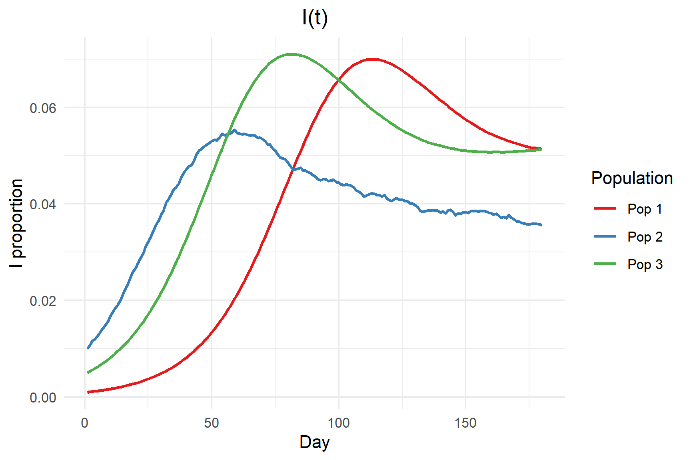

# ---- 1) EDIT YOUR INPUTS HERE -------------------
# Common (single-pop)
n_times <- 365 # Total days to simulate
pop <- 100000 # Population size
I_init <- 10 # Initial number of infectious individuals
beta <- 0.75 # Transmission rate
gamma <- 1/7 # Recovery rate
omega <- 1/30 # Rate of loss of immunity(R -> S)
# Multi-pop
mp_n_times <- 180 # Total days to simulate
mp_pops <- c(100000, 500, 200000) # Population sizes
mp_Iinit <- c(100, 5, 1000) # Initial infectious individuals
mp_beta <- 0.20 # Transmission rate
mp_gamma <- 1/7 # Recovery rate
mp_omega <- 1/30 # Rate of loss of immunity(R -> S)
# Customise uncertainty ribbons(Default to 95%)
ribbon_probs<- c(0.025, 0.975)
Epidemic Model Simulation
A lightweight, ready-to-use Package
Author: Wing Hei(Christy) Lai
Our Project Host
- The Infectious Disease Ecology and Modelling (IDEM) team
- Led by Professor Nick Golding, Mentor by Dr. August Hao, Dr.Saras M. Windecker and Dr.Kate Senior.
The team uses modelling and maps to measure risk for high-impact and neglected diseases (e.g., COVID-19) and provides rapid analyses to policymakers.
Our Project
Building a really to use R package to simulate the SIRS model.
Why this is the matters?
- Speed matters: We need to monitor and generate scenarios fast.
- Current pain: Tools are fragmented and inconsistent.
- Who benefits & impact:
- Who not familiar with coding can easily run;
- Experts can rapid, reproducible insights for policymakers (e.g. Government).
SIRS Model
Susceptible (S) have no immunity from the disease.
Infectious (I) have the disease and can spread it to susceptibles.
Recovered (R) have recovered from the disease and are immune.

SIRS Model (Conti..)
\[ \begin{aligned} \frac{dS}{dt} &= -\beta SI + \omega R\\ \frac{dI}{dt} &= \beta SI - \gamma I\\ \frac{dR}{dt} &= \gamma I - \omega R\\ \end{aligned} \]
- \(\beta\) is the transmission rate.
- \(\gamma\) is the recovery rate.
- \(\omega\) is rate at which the immune in R becomes susceptible again.(R → S)
- \(N = S + I + R\) is the total population size.
How to use?
Users can easily run the simulation and plot the result by following 3 simple steps:
- Edit your inputs → Load functions → Run simulation sections and plot results
Repeatable and customizable.
We have different functions for different scenarios:
- Deterministic
- Stochastic
- Multiple population(Deterministic)
- Multiple population(Stochastic)
- Dashboard with self arrange
Deterministic
Deterministic models use fixed parameters, it is simple and fast to run.
Provide fixable visual options to show the simulation result:
- Basic SIR plot, Incidence plot, Overlay plot, Both side plot


Deterministic (conti..)
Stochastic
- Stochastic models add randomness to better reflect real-world unpredictability.
- Customizable number of simulation runs.
- Epsilon: External infection pressure.
- Alpha: Reporting rate.
- Default uncertainty ribbons cover 95% of simulation outcomes(customised by users).
Multiple Population
- Consider different groups with different population sizes and initial infectious individuals.
# Multi-pop
mp_n_times <- 180 # Total days to simulate
mp_pops <- c(100000, 500, 200000) # Population sizes
mp_Iinit <- c(100, 5, 1000) # Initial infectious individuals
mp_beta <- 0.20 # Transmission rate
mp_gamma <- 1/7 # Recovery rate
mp_omega <- 1/30 # Rate of loss of immunity(R -> S)
# Multi-pop stochastic
mp_sims <- 200 # Number of stochastic simulations
mp_epsilon <- 0 # Noise parameter
mp_alpha <- NULL # Scaling factor for stochasticity
mp_seed <- 99 # Random seed for reproducibility
# Customise colors for multi-pop
my_pop_cols <- c("#E41A1C", "#377EB8", "#4DAF4A")
Summary of simulations
- Used
DTpackage - Datatable with interactive search, filter directly
Still in Developing: Dashboard Function
Allow users to run the simulation and plot the result in one function call.
Allow user to arrange their own dashboard for their further analysis.
Still in developing…here is the draft version.
- Current plots options: SIR, Incidence, beta, S, I, R, parameters.
── Simulation parameters ──
• n_times: 365
• P: 1
• pop_vec: 1
• I_init: 10
• beta: [vector]
• gamma: 0.1429
• 1/gamma (days): 7.00
• omega: 0.03333
• 1/omega (days): 30.00
• epsilon: —
• alpha: —
• n_sims: 1
• stochastic: FALSECreated on 2025-10-18 with reprex v2.1.1
Still in Developing: Dashboard Function
- Consider the multi-population and Stochastic scenario, different options for group style:
- “facet”: each population shown in a separate plot panel.
- “combined”: all populations shown in the same plot with different colors.
Group style = “facet”
Group style = “combined”
What next?
Finish the dashboard function
Well R markdown documentation
Tidy up the functions and make the package ready.
Thank You!
Q&A
Appendix A - Draft Demo Rmarkdown File
Appendix B - Functions
Current functions
../../R
├── adjust_beta.R
├── cum_metrics.R
├── make_beta.R
├── plot_dashboard.R
├── plot_det_vs_stoch.R
├── plot_multi.R
├── plot_sirs.R
├── plot_stoch.R
├── reff_from_sim.R
├── sanity_check.R
├── simulate_sirs_det.R
├── simulate_sirs_multi_det.R
├── simulate_sirs_multi_stoch.R
├── simulate_sirs_stoch.R
├── summarize_sim.R
└── to_tidy.R| Scenario | Options |
|---|---|
| Deterministic | SIR, Daily incidence, Overlay, Both |
| Single-pop Stoch | SIR, Daily incidence, Overlay, Both |
| Multi-pop | S, I, R, Daily incidence |
| Dashboard | SIR, S, I, R, Daily incidence, beta, params |
Appendix C - Core functions return to list
# If you want a single simulation’s trajectory (say sim 5) for pop 2:
I_t_series <- sim_F$proportions[ , 5, 2, "I"]
I_t_series [1] 0.010 0.010 0.014 0.012 0.014 0.016 0.018 0.020 0.016 0.020 0.020 0.020
[13] 0.024 0.026 0.028 0.030 0.030 0.034 0.036 0.044 0.044 0.050 0.048 0.060
[25] 0.074 0.070 0.080 0.080 0.078 0.074 0.088 0.082 0.082 0.086 0.088 0.086
[37] 0.096 0.114 0.122 0.112 0.118 0.124 0.112 0.114 0.116 0.118 0.132 0.132
[49] 0.144 0.142 0.130 0.122 0.116 0.116 0.116 0.112 0.112 0.112 0.112 0.108
[61] 0.096 0.096 0.086 0.086 0.074 0.066 0.060 0.056 0.052 0.052 0.058 0.054
[73] 0.054 0.052 0.056 0.052 0.044 0.038 0.042 0.042 0.040 0.040 0.040 0.040
[85] 0.040 0.038 0.036 0.038 0.044 0.052 0.050 0.052 0.054 0.060 0.060 0.052
[97] 0.048 0.050 0.052 0.050 0.056 0.062 0.060 0.060 0.076 0.084 0.068 0.070
[109] 0.074 0.068 0.074 0.082 0.076 0.078 0.090 0.096 0.100 0.088 0.074 0.076
[121] 0.074 0.068 0.066 0.068 0.064 0.060 0.064 0.074 0.080 0.058 0.054 0.046
[133] 0.044 0.040 0.032 0.038 0.036 0.038 0.036 0.034 0.042 0.042 0.048 0.044
[145] 0.044 0.042 0.042 0.050 0.050 0.044 0.040 0.042 0.042 0.038 0.036 0.042
[157] 0.040 0.038 0.038 0.044 0.040 0.034 0.030 0.030 0.030 0.028 0.018 0.018
[169] 0.024 0.020 0.018 0.020 0.026 0.028 0.024 0.032 0.044 0.042 0.046 0.044Appendix D -Deterministic Slide plot
Appendix E - Stochastic Slide plot
Appendix F - Dashboard Slide plot
Appendix G - Dashboard Arrange
Appendix H — Seasonal transmission rate β(t)
Contact patterns, climate, and school terms nudge transmission up/down through the year. A simple way to encode that is to let β oscillate smoothly.
Seasonal: beta oscillates like a cosine curve over a 365-day period
Formula: \[\beta_t\ = base * (1 + amplitude * cos(2 \pi (t + phase)/365))\]
base: average transmission rate
amplitude: how much it fluctuates (0 = flat, closer to 1 = bigger swings)
phase: Phase shift (days) for seasonality.

The Kids Research Institute Australia